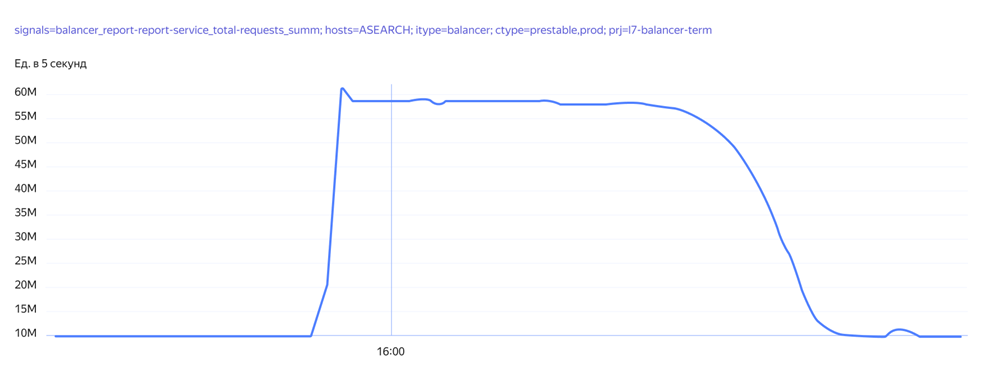
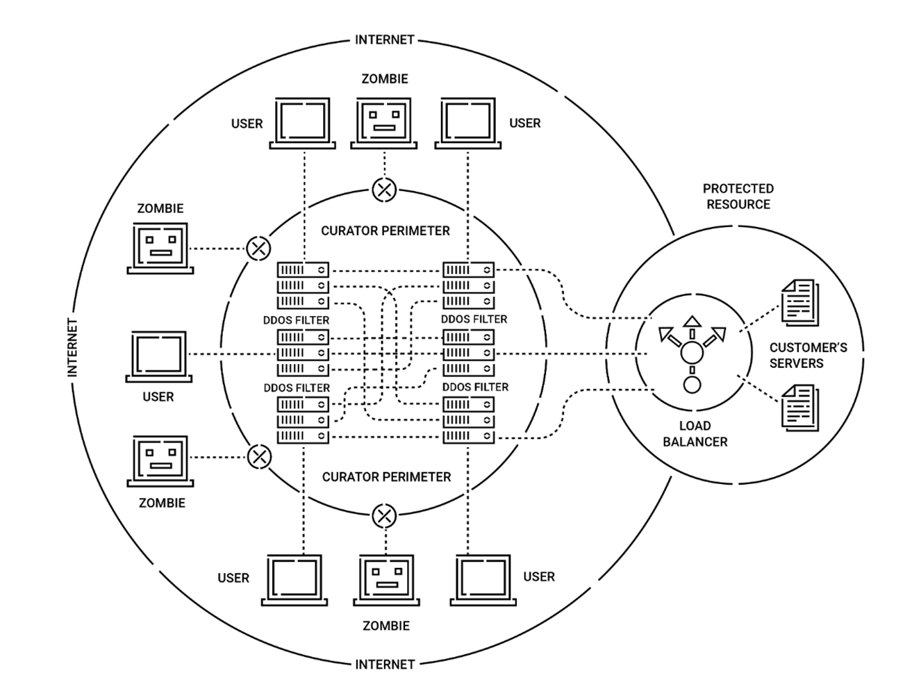

DDos-атаки
Студент ИОПС-23м
Что это
DDos-атака
Распределенная атака, приводящая к отказу в обслуживании
Цель атаки
Нарушить доступ обычных пользователей к информационным системам
Сценарии DDoS-атаки
В реальной жизни
Вероятные потери
- Упущенная выгода
- Штрафы и санкции
- Расход на безопасность
- Репутационные потери
- Финансовые потери
- Косвенные потери
- Риски для IoT и инфраструктуры
2024
- Количество DDos-атак в мире возросло на 108%
- Основная причина атак - политическая
2024
- 59% предовращённых атак с помощью StormWall были направлены на протокол HTTP
- Количество ботнетов увеличилось более чем в 4 раза
- Самые крупные ботнеты насчитывали десятки миллионов устройств
- Основные устройства в ботнетах: маршрутизаторы
Статистика от StormWall
2024 в России
- Россия заняла 8-е место в мире по количество DDos-атак (7,3% от всех атак)
- Количество DDoS-атак на увеличилось на 45% по сравнению с 2023 по данным StormWall (по данным Curator на 53%)
- Среднее количество устройств в ботнетах в России выросло в 5 раз
2024 в России
Куда бьют
Как противостоять
Опыт Яндекс
Опыт Яндекс. Подготовка
- Проведение аудита инфраструктуры
- Настройка лимитов
- Мониторинг трафика
- Обновление программного обеспечения
- Интеграция интеллектуальных WAF
Как усилить защиту
- Проведение регулярных аудитов инфраструктуры
- Внедрене многослойной защиты
- Обновление программного обеспечения
- Обучение персонала
- Использование облачных решений для защиты
- Разработка плана реагирования на инциденты
- Распределение нагрузки и ресурсов
- Внедрение механизмов верификации пользователей
Защита от атак
QRATOR
DDOS GUARD
Kaspersky DDoS Protection